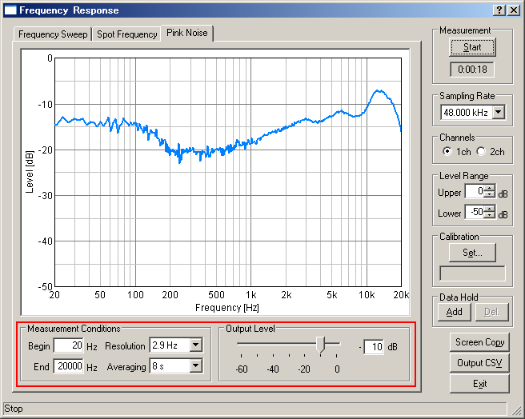

DSSF3 > RA > Reference Manual > Frequency response

| Commands or options | Descriptions | |
|---|---|---|
| Measurement Conditions | Begin | Input the minimum frequency to display. The range of the input starts from 1 up to 1/2 of the sampling rate. |
| End | Input the maximum frequency to display. The range of the input starts from 1 up to 1/2 of the sampling rate. | |
| Resolution | Select the resolution of the frequency. The higher the resolution, the more precise the measurement but the update rate for display delays. | |
| Averaging | Moving average suppresses irregular changes and the smooth graph is displayed. | |
| Output Level | Input the level of the measurement. The range of the input is between 0 (maximum) and 60 (minimum). | |
DSSF3 > RA > Reference Manual > Frequency response